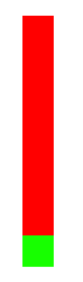

| General Terms | Definition | Behavior |
|---|---|---|
| Roleplaying Game | A game in which participants come together and play together to tell dynamic stories. | |
| Campaign | The adventure your characters are upon. | Often spanning multiple sessions. It encompasses a story from beginning to conclusion. |
| Session | The time when players get together to play the campaign. | Often spans anywhere from 30 minutes to 8 hours. |
| Player | A participant in the game. | They interact with game as their character, making their decisions and playing their role. |
| Character | A person/creature in the game. | Player Characters (PC's) are each controlled by a player, while Non-player Characters (NPC's) are controlled by the DM. |
| DM | Dungeon Master, the game's host. | Responsible for conceiving the campaign's general story, acting for monsters and townspeople, rewarding loot, and creating any necessary content for the campaign. |
| d20 | A twenty-sided die. | Used for in-game checks, where most often the result is compared to a difficulty score, determining success or failure. |
| Biography | Definition | Behavior |
| Name | Your character's name. Typically, this is what your allies and NPC's will refer to you by. | |
| Appearance | A physical description of your character, including their height, weight, gender, abnormalities, and clothing. | |
| Personality | Your character's behavior, encompassing their beliefs, attitudes, and perceptions. | |
| Motivation | Why your treasure hunter is on their quest for the ultimate relic. Generally, their motivation is a challenge so huge that only divine intervention can solve it. | |
| Class | Your primary class. | Determines your base stats, scores, and abilities. As you level-up, it'll influence your stat growth. |
| Classes | A list of all the classes you've had. | This list helps to illustrate how many classes you have at least one level in, and how many levels you've taken in each one. |
| Level | Your character level. | Considered from your class levels, this indicates your character's total experience. |
| Vitals | Definition | Behavior |
| Health | The measurement of your character's health-standing. | As you take damage in combat, your health is reduced. When it reaches 0, you're knocked-out. When it reaches negative its original score, you're dead. |
| Stamina | How much bodily energy you have remaining. | Many abilities use stamina as a resource. |
| Mana | How much magical energy you have remaining. | Many abilities use mana as a resource. |
| Focus | How much mental energy you have remaining. | Many abilities use focus as a resource. |
| FaR X | Factor and Replace with X. | Take an aforementioned value and divide by 5, then multiply again where 5 is replaced by X. |
| Equipment | Definition | Behavior |
| Primary Weapon | The weapon in your dominant hand. | What you'll be using during combat for melee/ranged attacks. Heavier weapons deal more damage but are harder to wield, while lighter weapons deal less damage but swing faster. |
| Secondary Weapon | The weapon in your non-dominant hand. | Typically a shield or a small sword. It's readily available for attacks. |
| Tools | Gadgets and bags of tool. | Tools aren't generally useful in battle, but they make certain adventuring feats significantly easier. |
| Consumables | Food and drink for on the road and on the warpath. | Generally rations, sandwiches, tea, and potions. They offer bonuses of vitality, restoration, strength, and speed. |
| Materials | Meat, fabric, wood, metal, minerals, and other unprocessed materials. | While in combat or in town with some time, you can use materials for crafting items, props, tools, and other useful things. |
| Stats | Definition | Behavior |
| Melee: Power and Evasion. | Measures your physical strength and evasion. | Power determines your base damage with melee attacks, while evasion determines how hard it is for melee attacks to hit you. |
| Magic: Power and Evasion | Measures your magic strength and evasion. | Power determines the base force of your spells, while evasion determines how hard it is for curses to affect you. |
| Skill: Power and Evasion. | Measures your technical strength and evasion. | Power determines how effective your skills are, while evasion determines your ability to subvert skills used on you. |
| Talents | Definition | Behavior |
| Craft | Your creative, inventive, and engineering talents. | Used in checks for creating, engineering, and modifying anything from clothes and weapons to homes and vehicles. |
| Harvest | Your talents in collecting resources from the environment or another object. | Used in Talent checks to determine how well you collect materials and objects from a certain resource. |
| Scholar | How good you are in studying, collecting information, and exercising your logical faculties. | Used in Talent checks to acquire and/or process information, such as with puzzles or ancient texts. |
| Navigate | Your talents in finding your way around dungeons, forests, and otherwise unknown regions. | Used in Talent checks to make travel in labyrinthine locations more efficient and less prone to getting lost. |
| Acrobatic | Your Talent in bodily exercises of speed, strength, and agility. | Used in checks that involve chasing, climbing, jumping, and otherwise getting past obstacles. |
| Entertain | Your talent in the arts of drawing, singing, acting, music, and others. | Used in checks to see how well you execute the performance and/or creation of art. |
| Arcana | Your talent in the study of magic, mysticism, and the practical application thereof. | Used in Talent checks involving the use of magic, sorcery, spells, and so on. (Does not apply to combat.) |
| Scores | Definition | Behavior |
| Initiative | How quick you are to act in combat. | Determined by your primary class. When battle begins, you add your initiative to your roll. |
| Carry | How many pieces of equipment you can hold on your person at one time. | A general measurement of how strong your back is, the greater your Carry, the more things you can carry on your person at one time. Exceeding it can penalize your movement actions, slowing you down. |
| Primary Damage | Your total damage with your primary weapon. | Calculated from the damage multiplier of your primary weapon. Whenever you deal damage with that weapon, this score indicates how much damage is inflicted. |
| Secondary Damage | Your total damage with your secondary weapon. | Similar to your primary weapon, if you have a weapon equipped in the secondary place, this measures how much damage your attacks will inflict. |
| Abilities | Definition | Behavior |
| Ability | A special action that can be used in combat to help turn the tides of battle. | Generally typed as support, offense, or defense, abilities you spend an amount of AP and/or resources to activate it. Each ability is different, often prompting you to make a check. |
| Abilities List | A list of your 11 abilities. | This list is compiled outside of combat from your primary class's innate ability, its core abilities, and some of your sideboard abilities. |
| Innate Abilities | A special ability unique to your primary class. It is marked with an I at the head of your Abilities list. | Powerful, useful, and definitive of the class's build. This ability cannot be learned to the sideboard unless learned with a Star Coin. |
| Class Abilities | One of ten abilities that can be learned from a class. | These abilities help define the core of the class. Whenever you take a level in a class, you pick one ability to save to your sideboard. |
| Master Abilities | Powerful abilities that are discovered upon becoming a master. | Once you reach level 20 as a player, you become a Master and get to pick 3 Master Abilities from across all the classes you've taken levels in. These abilities are incredibly powerful and can quickly end battles. |
| Sideboard | A special list of abilities that you've permanently learned. | For each level you take in a class, you get to choose one ability to stay with you on the sideboard. Whenever you get to compile your abilities list again, you may substitute up to 5 of the primary class's abilities with ones from the sideboard. |
| Ability Terms | Definition | Behavior |
| Type | Indicates how you use your ability. |
There are three type an ability may have.
|
| Method | Indicates how your ability is used. |
There are three methods for abilities.
|
| Application | Indicates when your ability is to be used. |
Appended to your ability's type. It describes the circumstances on when you can use the ability.
|
| Use | What resources are required to use the ability. | Most often it will require an amount of AP, though some abilities may also require an amount of Stamina, Mana, or Focus to use. Sometimes, they don't need AP at all - and fewer still have no cost. |
| Range | How far-reaching your ability or attack is. | Many abilities have projectiles or an area of affect. These ranges are measured in spaces as Xsp. |
| AoE | A wide field of range. | AoE stands for Area of Effect, where all enemy combatants within the space(s) are targeted by an ability. |
| Beam | A shape of AoE. |
Shaped like a long line, it targets every combatant within its path. touches.  |
| Check | A roll of the dice made to see if an ability successfully connected with its target. | You'll roll 1d20 and compare the result to the enemy's evasion score, indicated by the abbreviation of either Melee, Magic, or Skill. Upon passing the check, anything listed in OnPass happens. |
| OnPass/OnHit | When the check is made, this attribute is called into effect. | Abilities with a Check attribute will also have an OnPass attribute. Do anything the OnPass attribute indicates. |
| Effect | What happens when you activate the ability. |
The effect of an ability is everything that happens when activated. This can include...
|
| Variables. | These numbers represents factors of the ability that are linked to its owner's abilities. | Scores surrounded with curly-braces '{ }' explicitly reference their contained variables. |
| MlePwr | Stands for Melee Power. | References your Melee's Power score. |
| MleEva | Stands for Melee Evasion. | References your Melee's Evasion score. |
| MgcPwr | Stands for Magic Power. | References your Magic's Power score. |
| MgcEva | Stands for Magic Evasion. | References your Magic's Evasion score. |
| SklPwr | Stands for Skill Power. | References your Skill's Power score. |
| SklEva | Stands for Skill Evasion. | References your Skill's Evasion score. |
| PL | Stands for Player Level. | References the total level of your player character. |
| CL | Stands for Class Level. | References how many times you've taken a single class when leveling-up. |
| Statuses | Definition | Behavior |
| Prone | Your character has been knocked onto their back. | While prone all of your Evasion stats are considered 0 and you cannot make checks. Spend 10AP to get up and remove this status. |
| Bleeding X | You've been slashed and are bleeding uncontrollably. | You lose a X health until you die or until the bleeding is stopped. |
| Doomed X | A dark shadow haunts your soul, counting the seconds until it claims your life. | You have X turns until your health is set to negative its max. |
| Blessed X | An angel's blessing guards your life from death. | For the next X turns, your health cannot go below 1. |
| Blinded X | Something got inside your eyes and now you can't see at all. | For the next X turns, all your checks have disadvantage. |
| Poison X | That last strike has something nasty on the blade - and it's weakening you. | Increase AP cost of actions by X. |
| Guided X | Your eyes are filled with a light that guides your actions. | For the next X turns, all your checks have advantage. |
| Dispirited X | Something dark and strong is constricting your mana. | For the next X turns, you cannot cast spells or use magical items. |
| Broken | The item or tool has been shattered to pieces. | The broken item can no longer be used and offers no benefits or abilities. |
| Disabled | You've been hit in the wrong way and now you can't perform a certain action. | Disabled ability can no longer be used or activated. |
| Snared X | A tangle or rope has gotten around your feet, constricting your movement. | You cannot leave the space until X turns have passed. |
| Paralyzed X | Your feet have become useless, locking you in place. | You cannot make movement actions until X turns have passed. |
| Stealth | You've protected yourself by concealing your presence. |
While in stealth, enemies cannot target you unless with an AoE attack. If you take damage, you leave Stealth mode. An enemy combatant can make a check against your Skill-Evasion, whereupon success, you are found and leave Stealth. |
| Slowed X | Your feet are tangled up in cord, slowing your movement. | Your movement action's AP Cost is increased by 5 for the next X turns. |
| Burning X | You've caught fire! | You take X fire damage each turn until you put yourself out by spending 10AP to stop, drop, and roll. |
| Frozen X | Exposed to incredibly low temperatures, a layer of ice encases you. | You cannot make any actions and all your Evasions are 0 for the next X turns. Fire instantly melts the ice. |
| Asleep X | You've been bewitched into a deep slumber. | You cannot make any actions and your Evasions are 0 for the next X turns. Any damage instantly wakes you up. |
| Knocked-Out | Having suffered enough damage, your collapse in defeat. A little blue tongue of flame - your spirit - appears above your person. | At 0 health, you take the Knocked-Out status. You cannot many any actions and your Evasions are at 0. If your health reaches negative its max, you're dead. |
| Dead | The flame above your body burns out and you're dead. | You're dead and can no longer participate in the fight. Unless you have a Coin of Revival on your person, you will not respawn after the fight. |
| Elements | Definition | Behavior |
| Fire | Heat, flames, and cinders. |
|
| Water | Vapor, rivers, and rain. |
|
| Wind | Leaves, trees, and the soil. |
|
| Lightning | Shocks, bolts of lightning, and electricity. |
|
| Metal | Iron, bronze, and steel. |
|
| Darkness | Shadows, night, and malevolence. |
|
| Light | The coming dawn, illumination, and revelation. |
|
| Noble | All the elements combined. |
|
| Neutral | Excels in nothing. |
|
| Combat | Definition | Behavior |
| Battlefield | The area in which combatants fight each other. |
Typically a 2D plane utilizing marked spaces to represent navigable areas and pathways. Small symbols representing combatants are depicted upon it. |
| Combatant | A participant in combat. | Operated by either a player or the DM, they follow a turn order in moving and acting to either protect their team from losing, or in bringing the enemy team to defeat. |
| Space | A two-dimensional array of spatially associated shapes with dotted edges. | Used as the general standard of movement for combatants. Any enemy combatants within a space are within range of each other. |
| Round | A sequence of combatant turns, ordered by an initiative score. | Starting from highest score to lowest, once all combatant have taken their turn, a round is counted as passed and another begins. |
| Action Points | Spent by combatants to perform actions. | |
| Prop | A semi-realistic piece of scenery. | A constructed item presumed to take a shape matching its name. It's largely symbolic in purpose. |
| Token | An coin used good for a certain service. | An imaginary object designated by the ability that generated it to be given up in exchange for an effect, such as a bonus or another item. |
| Status | A state that your character can take. | |
| Marker | An invisible mark placed upon your person. | Markers are imaginary statuses placed upon your person that. They have no function in themselves, but most often influence the behavior of offending abilities. |
| Counter | An imaginary number placed above your person. | A counter is a variable that is recorded on your sheet and can either count down or up until a condition is reached. Counters are accompanied by a side-effect that are most often triggered each turn when the counter counts down. |
| Critical | A strike that hit a vital point or went down particularly hard. | Use Crit damage instead. |
| Critical Threshold | How likely you are to deal critical damage. | Beginning at 20, as it increases, your d20 has to roll lower to become critical. |
| Conditions | Definitions | Behavior |
| Visibility. | The general lighting of your environment or a certain area. | Depending on the intensity (or lack thereof) of the lighting, the success of your actions may be impeded. |
| Absolute Dark | 0% Visibility. There is no luminance in the area; it is all black. | -10 to any Accuracy checks. |
| Dark | 25% Visibility. Most figures are obscured as shadows and silhouettes. | -7 to any Accuracy checks. |
| Dim | 50% Visibility. Poor lighting makes it difficult to determine depth of entities. | -5 to any Accuracy checks. |
| Normal | 75% visibility. Mostly good visibility - the same as an overcast day. | No negative or positive effects. |
| Bright | 150% Visibility. Everything is over-saturated - like entering into light from darkness. | -5 to any Accuracy checks. |
| Brilliant | 175% Visibility. Most things are white and it hurts to open your eyes. | -7 to any Accuracy checks. |
| Blinding | 200% Visibility. Everything is absolute light - no depth or colors are discernable. | -10 to any Accuracy checks. |